Microphysics 1M
The Microphysics1M.jl module describes a 1-moment bulk parameterization of cloud microphysical processes. The module is based on the ideas of [1], [2] and [3].
The cloud microphysics variables are expressed as specific humidities:
q_tot- total water specific humidity,q_vap- water vapor specific humidity,q_liq- cloud water specific humidity,q_ice- cloud ice specific humidity,q_rai- rain specific humidity,q_sno- snow specific humidity.
Assumed particle size relationships
Particles are assumed to follow power-law relationships involving the mass(radius), denoted by $m(r)$, the cross section(radius), denoted by $a(r)$, and the terminal velocity(radius), denoted by $v_{term}(r)$, respectively. The coefficients are defined in the ClimaParams.jl package and are shown in the table below. For rain and ice they correspond to spherical liquid water drops and ice particles, respectively. There is no assumed particle shape for snow, and the relationships are empirical.
\[m(r) = \chi_m \, m_0 \left(\frac{r}{r_0}\right)^{m_e + \Delta_m}\]
\[a(r) = \chi_a \, a_0 \left(\frac{r}{r_0}\right)^{a_e + \Delta_a}\]
\[v_{term}(r) = \chi_v \, v_0 \left(\frac{r}{r_0}\right)^{v_e + \Delta_v}\]
where:
- $r$ is the particle radius,
- $r_0$ is the typical particle radius used to nondimensionalize,
- $m_0, \, m_e, \, a_0, \, a_e, \, v_0, \, v_e \,$ are the default coefficients,
- $\chi_m$, $\Delta_m$, $\chi_a$, $\Delta_a$, $\chi_v$, $\Delta_v$ are the coefficients that can be used during model calibration to expand around the default values. Without calibration all $\chi$ parameters are set to 1 and all $\Delta$ parameters are set to 0.
The above coefficients, similarly to all other microphysics parameters, are not hardcoded in the final microphysics parameterizations. The goal is to allow easy flexibility when calibrating the scheme. With that said, the assumption about the shape of the particles is used three times when deriving the microphysics formulae:
- The mass transfer equation (\ref{eq:mass_rate}) used in snow autoconversion, rain evaporation, snow sublimation and snow melt rates is derived assuming spherical particle shapes. To correct for non-spherical shape it should be multiplied by a function of the particle aspect ratio.
- The geometric collision kernel used for deriving rain-snow accretion rate assumes that both colliding particles are spherical. It does not take into account the reduced cross-section of snow particles that is used when modeling snow - cloud liquid water and snow - cloud ice accretion.
- In the definition of the Reynolds number that is used when computing ventilation factors.
| symbol | definition | units | default value | reference |
|---|---|---|---|---|
| $r_0^{rai}$ | typical rain drop radius | $m$ | $10^{-3}$ | |
| $m_0^{rai}$ | coefficient in $m(r)$ for rain | $kg$ | $\frac{4}{3} \, \pi \, \rho_{water} \, r_0^3$ | |
| $m_e^{rai}$ | exponent in $m(r)$ for rain | - | $3$ | |
| $a_0^{rai}$ | coefficient in $a(r)$ for rain | $m^2$ | $\pi \, r_0^2$ | |
| $a_e^{rai}$ | exponent in $a(r)$ for rain | - | $2$ | |
| $v_e^{rai}$ | exponent in $v_{term}(r)$ for rain | - | $0.5$ | |
| $r_0^{ice}$ | typical ice crystal radius | $m$ | $10^{-5}$ | |
| $m_0^{ice}$ | coefficient in $m(r)$ for ice | $kg$ | $\frac{4}{3} \, \pi \, \rho_{ice} \, r_0^3$ | |
| $m_e^{ice}$ | exponent in $m(r)$ for ice | - | $3$ | |
| $r_0^{sno}$ | typical snow crystal radius | $m$ | $10^{-3}$ | |
| $m_0^{sno}$ | coefficient in $m(r)$ for snow | $kg$ | $0.1 \, r_0^2$ | eq (6b) [2] |
| $m_e^{sno}$ | exponent in $m(r)$ for snow | - | $2$ | eq (6b) [2] |
| $a_0^{sno}$ | coefficient in $a(r)$ for snow | $m^2$ | $0.3 \pi \, r_0^2$ | $\alpha$ in eq(16b) [2]. |
| $a_e^{sno}$ | exponent in $a(r)$ for snow | - | $2$ | |
| $v_0^{sno}$ | coefficient in $v_{term}(r)$ for snow | $\frac{m}{s}$ | $2^{9/4} r_0^{1/4}$ | eq (6b) [2] |
| $v_e^{sno}$ | exponent in $v_{term}(r)$ for snow | - | $0.25$ | eq (6b) [2] |
where:
- $\rho_{water}$ is the density of water,
- $\rho_{ice}$ is the density of ice.
The terminal velocity of an individual rain drop is defined by the balance between the gravitational acceleration (taking into account the density difference between water and air) and the drag force. Therefore the $v_0^{rai}$ is defined as
\[\begin{equation} v_0^{rai} = \left( \frac{8}{3 \, C_{drag}} \left( \frac{\rho_{water}}{\rho} -1 \right) \right)^{1/2} (g r_0^{rai})^{1/2} \label{eq:vdrop} \end{equation}\]
where:
- $g$ is the gravitational acceleration,
- $C_{drag}$ is the drag coefficient,
- $\rho$ is the density of air.
[4] provides a terminal velocity parameterisation based on an empirical fit to a high accuracy model. The terminal velocity depends on particle shape, size and density, consideres the deformation effects of large rain drops, as well as size-specific air density dependence. The fall speed of individual particles $v(D)$ is parameterized as:
\[\begin{equation} v_{term}(D) = \phi^{\kappa} \sum_{i=1}^{j} \; a_i D^{b_i} e^{-c_i \; D} \end{equation}\]
where:
- $D$ is the particle diameter,
- $a_i$, $b_i$, $c_i$ are the free parameters,
- $\phi$ is the aspect ratio, and
- $\kappa$ is a parameter that depends on the particle shape ($\kappa=0$ for spheres, $\kappa=-1/3$ for oblate and $\kappa=1/6$ for prolate spheroids).
For ice and snow $j=2$ and for rain $j=3$, to account for deformation at larger sizes. For rain and ice we assume $\phi=1$ (spherical). For snow we assume $\kappa = -1/3$ and find the aspect ratio that is consistent with the assumed $m(r)$ and $a(r)$ relationships. The aspect ratio is defined as:
\[\begin{equation} \phi \equiv c/a \end{equation}\]
where:
- $a$ is the basal plane axial half-length, and
- $c$ is perpendicular to the basal plane.
The volume of a spheroid can be represented as $V_p = 4\pi/3 \; a^2 c$ and the area can be represented as $A_p = \pi a c$. It follows that $c = (4A_p^2) / (3 \pi V_p)$, $a = (3V_p) / (4A_p)$, and $\phi = (16 A_p^3) / (9 \pi V_p^2)$. The volume and area are defined by the assumed power-law size relations $V_p = m(r) / (\rho_{ice})$, $A_p = a(r)$. As a result the terminal velocity of individual snow particles as:
\[\begin{equation} v_{term}(r) = \left(\frac{16 \; \rho_{ice}^2 \; a_0^3 \; (r/r_0)^{3a_e}}{9 \pi \; m_0^2 \; (r/r_0)^{2 m_e}} \right)^{\kappa} \sum_{i=1}^{2} \; a_i (2r)^{b_i} e^{-2 c_i r} \end{equation}\]
where $r$ is the radius of the particle.
Here we plot the terminal velocity formulae from the current default 1-moment scheme and [4]. We also show the aspect ratio of snow particles.
include("plots/TerminalVelocityComparisons.jl")"/home/runner/work/CloudMicrophysics.jl/CloudMicrophysics.jl/docs/build/1M_individual_terminal_velocity_comparisons.svg"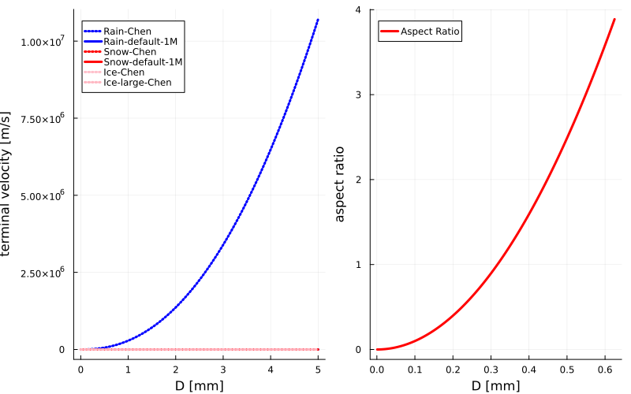
The rain $a_i$, $b_i$, and $c_i$ are listed in the table below. The formula is applicable when $D > 0.1 mm$, $q$ refers to $q = e^{0.115231 \; \rho_a}$, where $\rho_a$ is air density [kg/m3]. The units are: [v] = m/s, [D]=mm, [$a_i$] = $mm^{-b_i} m/s$, [$b_i$] is dimensionless, [$c_i$] = 1/mm.
| $i$ | $a_i$ | $b_i$ | $c_i$ |
|---|---|---|---|
| 1 | $0.044612 \; q$ | $2.2955 \; -0.038465 \; \rho_a$ | $0$ |
| 2 | $-0.263166 \; q$ | $2.2955 \; -0.038465 \; \rho_a$ | $0.184325$ |
| 3 | $4.7178 \; q \; (\rho_a)^{-0.47335}$ | $1.1451 \; -0.038465 \; \rho_a$ | $0.184325$ |
The ice and snow $a_i$, $b_i$, and $c_i$ are listed in the table below. The formula is applicable when $D < 0.625 mm$.
| $i$ | $a_i$ | $b_i$ | $c_i$ |
|---|---|---|---|
| 1 | $E_s (\rho_a)^{A_s}$ | $B_s + C_s \rho_a$ | $0$ |
| 2 | $F_s (\rho_a)^{A_s}$ | $B_s + C_s \rho_a$ | $G_s$ |
| Coefficient | Formula |
|---|---|
| $A_s$ | $0.00174079 \log{(\rho_{ice})}^2 − 0.0378769 \log{(\rho_{ice})} - 0.263503$ |
| $B_s$ | $(0.575231 + 0.0909307 \log{(\rho_{ice})} + 0.515579 / \sqrt{\rho_{ice}})^{-1}$ |
| $C_s$ | $-0.345387 + 0.177362 \, \exp{(-0.000427794 \rho_{ice})} + 0.00419647 \sqrt{\rho_{ice}}$ |
| $E_s$ | $-0.156593 - 0.0189334 \log{(\rho_{ice})}^2 + 0.1377817 \sqrt{\rho_{ice}}$ |
| $F_s$ | $- \exp{[-3.35641 - 0.0156199 \log{\rho_{ice}}^2 + 0.765337 \log{\rho_{ice}}]}$ |
| $G_s$ | $(-0.0309715 + 1.55054 / \log{(\rho_{ice})} - 0.518349 log{(\rho_{ice})} / \rho_{ice})^{-1}$ |
Assumed particle size distributions
The particle size distributions are assumed to follow Marshall-Palmer distribution [7] eq. 1:
\[\begin{equation} n(r) = n_{0} exp\left(- \lambda \, r \right) \end{equation}\]
where:
- $n_{0}$ and $\lambda$ are the Marshall-Palmer distribution parameters.
The $n_0$ for rain and ice is assumed constant. The $n_0$ for snow is defined as
\[\begin{equation} n_0^{sno} = \mu^{sno} \left(\frac{\rho}{\rho_0} q_{sno}\right)^{\nu^{sno}} \end{equation}\]
where:
- $\mu^{sno}$ and $\nu^{sno}$ are the coefficients
- $\rho_0$ is the typical air density used to nondimensionalize the equation and is equal to $1 \, kg/m^3$
The coefficients are defined in ClimaParams.jl package and are shown in the table below.
| symbol | definition | units | default value | reference |
|---|---|---|---|---|
| $n_{0}^{rai}$ | rain drop size distribution parameter | $\frac{1}{m^4}$ | $16 \cdot 10^6$ | eq (2) [7] |
| $n_{0}^{ice}$ | cloud ice size distribution parameter | $\frac{1}{m^4}$ | $2 \cdot 10^7$ | bottom of page 4396 [3] |
| $\mu^{sno}$ | snow size distribution parameter coefficient | $\frac{1}{m^4}$ | $4.36 \cdot 10^9 \, \rho_0^{\nu^{sno}}$ | eq (A1) [3] |
| $\nu^{sno}$ | snow size distribution parameter exponent | $-$ | $0.63$ | eq (A1) [3] |
The $\lambda$ parameter is defined as
\[\begin{equation} \lambda = \left( \frac{ \Gamma(m_e + \Delta_m + 1) \, \chi_m \, m_0 \, n_0} {q \, \rho \, (r_0)^{m_e + \Delta_m}} \right)^{\frac{1}{m_e + \Delta_m + 1}} \end{equation}\]
where:
- $q$ is rain, snow or ice specific humidity
- $\chi_m$, $m_0$, $m_e$, $\Delta_m$, $r_0$, and $n_0$ are the corresponding mass(radius) and size distribution parameters
- $\Gamma()$ is the gamma function
The cloud-ice size distribution is used when computing snow autoconversion rate and rain sink due to accretion. In other derivations cloud ice, similar to cloud liquid water, is treated as continuous.
Do we want to keep the $n_0$ for rain constant and $n_0$ for snow empirical?
Do we want to test different size distributions?
Here we plot the Marshall-Palmer particle size distribution for 4 different values for the rain specific humidity (q_rai).
include("plots/MarshallPalmer_distribution.jl")CairoMakie.Screen{SVG}
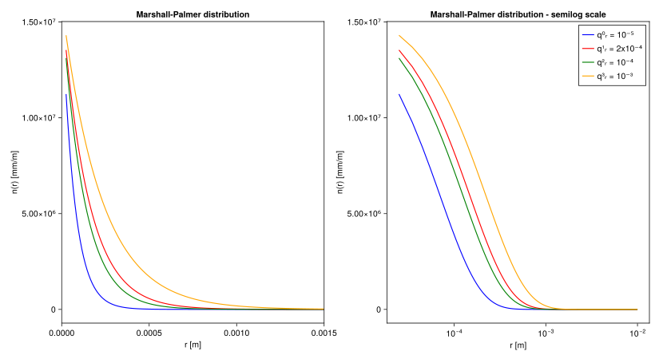
Parameterized processes
Parameterized processes include:
- autoconversion of rain and snow,
- accretion,
- evaporation of rain water,
- sublimation, vapor deposition and melting of snow,
- sedimentation of rain and snow with mass weighted average terminal velocity (cloud water and cloud ice are part of the working fluid and do not sediment).
Parameters used in the parameterization are defined in ClimaParams.jl package. They consist of:
| symbol | definition | units | default value | reference |
|---|---|---|---|---|
| $C_{drag}$ | rain drop drag coefficient | - | $0.55$ | $C_{drag}$ is such that the mass averaged terminal velocity is close to [8] |
| $\tau_{acnv\_rain}$ | cloud liquid to rain water autoconversion timescale | $s$ | $10^3$ | eq (5a) [8] |
| $\tau_{acnv\_snow}$ | cloud ice to snow autoconversion timescale | $s$ | $10^2$ | |
| $q_{liq\_threshold}$ | cloud liquid to rain water autoconversion threshold | - | $5 \cdot 10^{-4}$ | eq (5a) [8] |
| $q_{ice\_threshold}$ | cloud ice snow autoconversion threshold | - | $1 \cdot 10^{-6}$ | |
| $r_{is}$ | threshold particle radius between ice and snow | $m$ | $62.5 \cdot 10^{-6}$ | abstract [9] |
| $E_{lr}$ | collision efficiency between rain drops and cloud droplets | - | $0.8$ | eq (16a) [2] |
| $E_{ls}$ | collision efficiency between snow and cloud droplets | - | $0.1$ | Appendix B [10] |
| $E_{ir}$ | collision efficiency between rain drops and cloud ice | - | $1$ | Appendix B [11] |
| $E_{is}$ | collision efficiency between snow and cloud ice | - | $0.1$ | bottom page 3649 [12] |
| $E_{rs}$ | collision efficiency between rain drops and snow | - | $1$ | top page 3650 [12] |
| $a_{vent}^{rai}, b_{vent}^{rai}$ | rain drop ventilation factor coefficients | - | $1.5 \;$,$\; 0.53$ | chosen such that at $q_{tot}=15 g/kg$ and $T=288K$ the evap. rate is close to empirical evap. rate in [8] |
| $a_{vent}^{sno}, b_{vent}^{sno}$ | snow ventilation factor coefficients | - | $0.65 \;$,$\; 0.44$ | eq (A19) [3] |
| $K_{therm}$ | thermal conductivity of air | $\frac{J}{m \; s \; K}$ | $2.4 \cdot 10^{-2}$ | |
| $\nu_{air}$ | kinematic viscosity of air | $\frac{m^2}{s}$ | $1.6 \cdot 10^{-5}$ | |
| $D_{vapor}$ | diffusivity of water vapor | $\frac{m^2}{s}$ | $2.26 \cdot 10^{-5}$ |
Ventilation factor
The ventilation factor parameterizes the increase in the mass and heat exchange for falling particles. Following [13] eq. 24 the ventilation factor is defined as:
\[\begin{equation} F(r) = a_{vent} + b_{vent} N_{Sc}^{1/3} N_{Re}(r)^{1/2} \label{eq:ventil_factor} \end{equation}\]
where:
- $a_{vent}$, $b_{vent}$ are coefficients,
- $N_{Sc}$ is the Schmidt number,
- $N_{Re}$ is the Reynolds number of a falling particle.
The Schmidt number is assumed constant:
\[N_{Sc} = \frac{\nu_{air}}{D_{vapor}}\]
where:
- $\nu_{air}$ is the kinematic viscosity of air,
- $D_{vapor}$ is the diffusivity of water.
The Reynolds number of a spherical drop is defined as:
\[N_{Re} = \frac{2 \, r \, v_{term}(r)}{\nu_{air}}\]
Applying the terminal velocity(radius) relationship results in
\[\begin{equation} F(r) = a_{vent} + b_{vent} \, \left(\frac{\nu_{air}}{D_{vapor}}\right)^{\frac{1}{3}} \, \left(\frac{2 \, \chi_v \, v_0} {r_0^{v_e + \Delta_v} \, \nu_{air}}\right)^{\frac{1}{2}} \, r^{\frac{v_e + \Delta_v + 1}{2}} \label{eq:vent_factor} \end{equation}\]
Terminal velocity
The mass weighted terminal velocity $v_t$ (following [14]) is:
\[\begin{equation} v_t = \frac{\int_0^\infty n(r) \, m(r) \, v_{term}(r) \, dr} {\int_0^\infty n(r) \, m(r) \, dr} \label{eq:vt} \end{equation}\]
Integrating the default 1-moment $m(r)$ and $v_{term}(r)$ relationships over the assumed Marshall-Palmer distribution results in group terminal velocity:
\[\begin{equation} v_t = \chi_v \, v_0 \, \left(\frac{1}{r_0 \, \lambda}\right)^{v_e + \Delta_v} \frac{\Gamma(m_e + v_e + \Delta_m + \Delta_v + 1)} {\Gamma(m_e + \Delta_m + 1)} \end{equation}\]
Integrating [4] formulae for rain and ice over the assumed Marshall-Palmer size distribution, results in group terminal velocity:
\[\begin{equation} v_t = \sum_{i=1}^{j} \frac{a_i \lambda^{\delta} \Gamma(b_i + \delta)}{(\lambda + c_i)^{b_i + 4} \; \Gamma(4)} \end{equation}\]
Finally, integrating [4] formulae for snow over the assumed Marshall-Palmer distribution, results in group terminal velocity:
\[\begin{equation} v_t = \sum_{i=1}^{2} t_i \frac{\Gamma(3a_e \kappa - 2 m_e \kappa + b_i + k + 1)}{\Gamma(k+1)} \end{equation}\]
where:
\[\begin{equation} t_i = \frac{[16 a_0^3 \rho_{ice}^2]^{\kappa} \; a_i \; 2^{b_i} [2 c_i \lambda]^{-(3 a_e \kappa - 2 m_e \kappa + b_i + k)-1}} {[9 \pi m_0^2]^{\kappa} \; r_0^{3 a_e \kappa - 2 m_e \kappa} \lambda^{-k-1}} \end{equation}\]
and $k = 3$.
Rain autoconversion
Rain autoconversion defines the rate of conversion form cloud liquid water to rain water due to collisions between cloud droplets. It is parameterized following [1]:
\[\begin{equation} \left. \frac{d \, q_{rai}}{dt} \right|_{acnv} = \frac{max(0, q_{liq} - q_{liq\_threshold})}{\tau_{acnv\_rain}} \end{equation}\]
where:
- $q_{liq}$ - liquid water specific humidity,
- $\tau_{acnv\_rain}$ - timescale,
- $q_{liq\_threshold}$ - autoconversion threshold.
This is the simplest possible autoconversion parameterization. It would be great to implement others and test the impact on precipitation. See for example [15] Table 1 for other simple choices.
Snow autoconversion
Snow autoconversion defines the rate of conversion form cloud ice to snow due the growth of cloud ice by water vapor deposition. It is defined as the change of mass of cloud ice for cloud ice particles larger than threshold $r_{is}$. See [9] for derivation.
\[\begin{equation} \left. \frac{d \, q_{sno}}{dt} \right|_{acnv} = \frac{1}{\rho} \frac{d}{dt} \left( \int_{r_{is}}^{\infty} m(r) n(r) dr \right) = \left. \frac{1}{\rho} \frac{dr}{dt} \right|_{r=r_{is}} m(r_{is}) n(r_{is}) + \frac{1}{\rho} \int_{r_{is}}^{\infty} \frac{dm}{dt} n(r) dr \end{equation}\]
The $\frac{dm}{dt}$ is obtained by solving the water vapor diffusion equation in spherical coordinates and linking the changes in temperature at the drop surface to the changes in saturated vapor pressure via the Clausius-Clapeyron equation, following [16].
For the simplest case of spherical particles and not taking into account ventilation effects:
\[\begin{equation} \frac{dm}{dt} = 4 \pi \, r \, (S - 1) \, G(T) \label{eq:mass_rate} \end{equation}\]
where:
- $S(q_{vap}, q_{vap}^{sat}) = \frac{q_{vap}}{q_{vap}^{sat}}$ is saturation,
- $q_{vap}^{sat}$ is the saturation vapor specific humidity (over ice in this case),
- $G(T) = \left(\frac{L_s}{KT} \left(\frac{L_s}{R_v T} - 1 \right) + \frac{R_v T}{p_{vap}^{sat} D} \right)^{-1}$ combines the effects of thermal conductivity and water diffusivity.
- $L_s$ is the latent heat of sublimation,
- $K_{thermo}$ is the thermal conductivity of air,
- $R_v$ is the gas constant of water vapor,
- $D_{vapor}$ is the diffusivity of water vapor
Using eq. (\ref{eq:mass_rate}) and the assumed $m(r)$ relationship we obtain
\[\begin{equation} \frac{dr}{dt} = \frac{4 \pi \, (S - 1)}{\chi_m \, (m_e + \Delta_m)} \, \left( \frac{r_0}{r} \right)^{m_e + \Delta_m} \, \frac{G(T) \, r^2}{m_0} \label{eq:r_rate} \end{equation}\]
Finally the snow autoconversion rate is computed as
\[\begin{equation} \left. \frac{d \, q_{sno}}{dt} \right|_{acnv} = \frac{1}{\rho} 4 \pi \, (S-1) \, G(T) \, n_0^{ice} \, exp(-\lambda_{ice} r_{is}) \left( \frac{r_{is}^2}{m_e^{ice} + \Delta_m^{ice}} + \frac{r_{is} \lambda_{ice} +1}{\lambda_{ice}^2} \right) \end{equation}\]
We should include ventilation effects.
For non-spherical particles the mass rate of growth should be multiplied by a function depending on the particle aspect ratio. For functions proposed for different crystal habitats see [9] Appendix B.
We also have a simplified version of snow autoconversion rate, to be used in modeling configurations that don't allow supersaturation to be present in the computational domain. It is formulated similarly to the rain autoconversion:
\[\begin{equation} \left. \frac{d \, q_{sno}}{dt} \right|_{acnv} = \frac{max(0, q_{ice} - q_{ice\_threshold})}{\tau_{acnv\_snow}} \end{equation}\]
where:
- $q_{liq}$ - liquid water specific humidity,
- $\tau_{acnv\_rain}$ - timescale,
- $q_{liq\_threshold}$ - autoconversion threshold.
Accretion
Accretion defines the rates of conversion between different categories due to collisions between particles.
For the case of collisions between cloud water (liquid water or ice) and precipitation (rain or snow) the sink of cloud water is defined as:
\[\begin{equation} \left. \frac{d \, q_{c}}{dt} \right|_{accr} = - \int_0^\infty n_p(r) \, a^p(r) \, v_{term}(r) \, E_{cp} \, q_{c} \, dr \label{eq:accr_1} \end{equation}\]
where:
- $c$ subscript indicates cloud water category (cloud liquid water or ice)
- $p$ subscript indicates precipitation category (rain or snow)
- $E_{cp}$ is the collision efficiency.
Integrating over the distribution yields:
\[\begin{equation} \left. \frac{d \, q_c}{dt} \right|_{accr} = - n_{0}^p \, \Pi_{a, v}^p \, q_c \, E_{cp} \, \Gamma(\Sigma_{a, v}^p + 1) \, \frac{1}{\lambda^p} \, \left( \frac{1}{r_0^p \lambda^p} \right)^{\Sigma_{a, v}^p} \label{eq:accrfin} \end{equation}\]
where:
- $\Pi_{a, v}^p = a_0^p \, v_0^p \, \chi_a^p \, \chi_v^p$
- $\Sigma_{a, v}^p = a_e^p + v_e^p + \Delta_a^p + \Delta_v^p$
For the case of cloud liquid water and rain and cloud ice and snow collisions, the sink of cloud water becomes simply the source for precipitation. For the case of cloud liquid water and snow collisions for temperatures below freezing, the sink of cloud liquid water is a source for snow. For temperatures above freezing, the accreted cloud droplets along with some melted snow are converted to rain. In this case eq. (\ref{eq:accrfin}) describes the sink of cloud liquid water. The sink of snow is proportional to the sink of cloud liquid water with the coefficient $\frac{c_{vl}}{L_f}(T - T_{freeze})$, where $c_{vl}$ is the isochoric specific heat of liquid water, $L_f$ is the latent heat of freezing, and $T_{freeze}$ is the freezing temperature.
The collisions between cloud ice and rain create snow. The source of snow in this case is a sum of sinks from cloud ice and rain. The sink of cloud ice is defined by eq. (\ref{eq:accrfin}). The sink of rain is defined as:
\[\begin{equation} \left. \frac{d \, q_{rai}}{dt} \right|_{accr\_ri} = - \int_0^\infty \int_0^\infty \frac{1}{\rho} \, E_{ir} \, n_i(r_i) \, n_r(r_r) \, a_r(r_r) \, m_r(r_r) \, v_{term}(r_r) \, d r_i d r_r \label{eq:accr_ir} \end{equation}\]
where:
- $E_{ir}$ is the collision efficiency between rain and cloud ice
- $n_i$ and $n_r$ are the cloud ice and rain size distributions
- $m_r$, $a_r$ and $v_{term}$ are the mass(radius), cross section(radius) and terminal velocity(radius) relations for rain
- $r_i$ and $r_r$ mark integration over cloud ice and rain size distributions
Integrating eq.(\ref{eq:accr_ir}) yields:
\[\begin{equation} \left. \frac{d \, q_{rai}}{dt} \right|_{accr\_ri} = - \frac{1}{\rho} \, E_{ir} \, n_0^{rai} \, n_0^{ice} \, \Pi_{m, a, v}^{rai} \Gamma(\Sigma_{m, a, v}^{rai} + 1) \, \frac{1}{\lambda^{ice} \, \lambda^{rai}} \, \left( \frac{1}{r_0^{rai} \, \lambda^{rai}} \right)^{\Sigma_{m, a, v}^{rai}} \end{equation}\]
where:
- $\Pi_{m, a, v}^{rai} = m_0^{rai} \, a_0^{rai} \, v_0^{rai} \, \chi_m^{rai} \, \chi_a^{rai} \, \chi_v^{rai}$
- $\Sigma_{m, a, v}^{rai} = m_e^{rai} + a_e^{rai} + v_e^{rai} + \Delta_m^{rai} + \Delta_a^{rai} + \Delta_v^{rai}$
Collisions between rain and snow result in snow in temperatures below freezing and in rain in temperatures above freezing. The source term is defined as:
\[\begin{equation} \left. \frac{d \, q_i}{dt} \right|_{accr} = \int_0^\infty \int_0^\infty \frac{1}{\rho} n_i(r_i) \, n_j(r_j) \, a(r_i, r_j) \, m_j(r_j) \, E_{ij} \, \left|v_{term}(r_i) - v_{term}(r_j)\right| \, dr_i dr_j \label{eq:accr_sr1} \end{equation}\]
where
- $i$ stands for rain ($T>T_{freezing}$) or snow ($T<T_{freezing}$)
- $j$ stands for snow ($T>T_{freezing}$) or rain ($T<T_{freezing}$)
- $a(r_i, r_j)$ is the crossection of the two colliding particles
There are two additional assumptions that we make to integrate eq.(\ref{eq:accr_sr1}):
$\left|v_{term}(r_i) - v_{term}(r_j)\right| \approx \left| v_{ti} - v_{tj} \right|$ We approximate the terminal velocity difference for each particle pair with a difference between mass-weighted mean terminal velocities and move it outside of the integral. See the discussion in Ikawa_and_Saito_1991 page 88.
We assume that $a(r_i, r_j) = \pi (r_i + r_j)^2$. This corresponds to a geometric formulation of the collision kernel, aka cylindrical formulation, see [17] for discussion.
The eq.(\ref{eq:accr_sr1}) can then be integrated as:
\[\begin{align} \left. \frac{d \, q_i}{dt} \right|_{accr} & = \frac{1}{\rho} \, \pi \, n_0^{i} \, n_0^{j} \, m_0^j \, \chi_m^j \, \left(\frac{1}{r_0^j}\right)^{m_e^j + \Delta_m^j} \, E_{ij} \left| v_{ti} - v_{tj} \right| \int_0^\infty \int_0^\infty (r_i + r_j)^2 r_{j}^{m_e^j + \Delta_m^j} \, exp(- \lambda_j r_j) \, exp(- \lambda_i r_i) \, dr_i dr_j \\ & = \frac{1}{\rho} \, \pi \, n_0^{i} \, n_0^{j} \, m_0^j \, \chi_m^j \, E_{ij} \left| v_{ti} - v_{tj} \right| \, \left( \frac{1}{r_0^j} \right)^{m_e^j + \Delta_m^j} \left( \frac{2 \Gamma(m_e^j + \Delta_m^j + 1)}{\lambda_i^3 \lambda_j^{m_e^j + \Delta_m^j + 1}} + \frac{2 \Gamma(m_e^j + \Delta_m^j + 2)}{ \lambda_i^2 \lambda_j^{m_e^j + \Delta_m^j + 2}} + \frac{\Gamma(m_e^j + \Delta_m^j + 3)}{\lambda_i \lambda_j^{m_e^j + \Delta_m^j + 3}} \right) \end{align}\]
Both of the assumptions needed to integrate the snow-rain accretion rate could be revisited:
The discussion on page 88 in Ikawa_and_Saito_1991 suggests an alternative approximation of the velocity difference.
The $(r_i + r_j)^2$ assumption for the crossection is inconsistent with the snow crossection used when modelling collisions with cloud water and cloud ice.
Rain evaporation and snow sublimation
We start from a similar equation as when computing snow autoconversion rate but integrate it from $0$ to $\infty$.
\[\begin{equation} \left. \frac{dq}{dt} \right|_{evap\_subl} = \frac{1}{\rho} \int_{0}^{\infty} \frac{dm(r)}{dt} n(r) dr \end{equation}\]
In contrast to eq.(\ref{eq:mass_rate}), now we are taking into account ventilation effects:
\[\begin{equation} \frac{dm}{dt} = 4 \pi \, r \, (S - 1) \, G(T) \, F(r) \label{eq:mass_rate2} \end{equation}\]
where:
- $F(r)$ is the rain drop ventilation factor defined in (\ref{eq:ventil_factor})
- saturation S is computed over water or ice
The final integral is:
\[\begin{align} \left. \frac{dq}{dt} \right|_{evap\_subl} & = \frac{4 \pi n_0}{\rho} (S - 1) G(T) \int_0^\infty \left( a_{vent} + b_{vent} \, \left(\frac{\nu_{air}}{D_{vapor}} \right)^{\frac{1}{3}} \, \left(\frac{r}{r_0} \right)^{\frac{v_e + \Delta_v}{2}} \, \left(\frac{2 \, \chi_v \, v_0 \, r}{\nu_{air}} \right)^{\frac{1}{2}} \right) r \, exp(-\lambda r) dr \\ & = \frac{4 \pi n_0}{\rho} (S - 1) G(T) \lambda^{-2} \left( a_{vent} + b_{vent} \, \left(\frac{\nu_{air}}{D_{vapor}} \right)^{\frac{1}{3}} \, \left(\frac{1}{r_0 \, \lambda} \right)^{\frac{v_e + \Delta_v}{2}} \, \left(\frac{2 \, \chi_v \, v_0}{\nu_{air} \, \lambda} \right)^{\frac{1}{2}} \, \Gamma\left( \frac{v_e + \Delta_v + 5}{2} \right) \right) \end{align}\]
For the case of rain we only consider evaporation ($S - 1 < 0$). For the case of snow we consider both the source term due to vapor deposition on snow ($S - 1 > 0$) and the sink due to vapor sublimation ($S - 1 < 0$).
We should take into account the non-spherical snow shape. Modify the Reynolds number and growth equation.
Snow melt
If snow occurs in temperatures above freezing it is melting into rain. The sink for snow is parameterized again as
\[\begin{equation} \left. \frac{dq}{dt} \right|_{melt} = \frac{1}{\rho} \int_{0}^{\infty} \frac{dm(r)}{dt} n(r) dr \end{equation}\]
For snow melt
\[\begin{equation} \frac{dm}{dt} = 4 \pi \, r \, \frac{K_{thermo}}{L_f} (T - T_{freeze}) \, F(r) \label{eq:mass_rate3} \end{equation}\]
where:
- $F(r)$ is the ventilation factor defined in (\ref{eq:ventil_factor})
- $L_f$ is the latent heat of freezing.
If $T > T_{freeze}$:
\[\begin{equation} \left. \frac{dq}{dt} \right|_{evap\_subl} = \frac{4 \pi \, n_0 \, K_{thermo}}{\rho \, L_f} (T - T_{freeze}) \lambda^{-2} \left( a_{vent} + b_{vent} \, \left( \frac{\nu_{air}}{D_{vapor}} \right)^{\frac{1}{3}} \, \left( \frac{1}{r_0 \, \lambda} \right)^{\frac{v_e + \Delta_v}{2}} \, \left( \frac{2 \, \chi_v \, v_0}{\nu_{air} \, \lambda} \right)^{\frac{1}{2}} \, \Gamma \left( \frac{v_e + \Delta_v + 5}{2} \right) \right) \end{equation}\]
Rain radar reflectivity
The rain radar reflectivity factor ($Z$) is used to measure the power returned by a radar signal when it encounters rain particles, and it is defined as the sixth moment of the rain particles distribution:
\[\begin{equation} Z = {\int_0^\infty r^{6} \, n(r) \, dr}. \label{eq:Z} \end{equation}\]
Integrating over the assumed Marshall-Palmer distribution (eq. 6) leads to
\[\begin{equation} Z = {\frac{6! \, n_{0}^{rai}}{\lambda^7}}, \end{equation}\]
where:
- $n_{0}^{rai}$ - rain drop size distribution parameter,
- $\lambda$ - as defined in eq. 7
By dividing $Z$ with the equivalent return of a $1 mm$ drop in a volume of a meter cube ($Z_0$) and applying the decimal logarithm to the result, we obtains the logarithmic rain radar reflectivity $L_Z$, which is the variable that is commonly used to refer to the radar reflectivity values:
\[\begin{equation} L_Z = {10 \, \log_{10}(\frac{Z}{Z_0})}. \end{equation}\]
The resulting logarithmic dimensionless unit is decibel relative to $Z$, or $dBZ$.
Example figures
include("plots/Microphysics1M_plots.jl")"/home/runner/work/CloudMicrophysics.jl/CloudMicrophysics.jl/docs/build/snow_melt_rate.svg"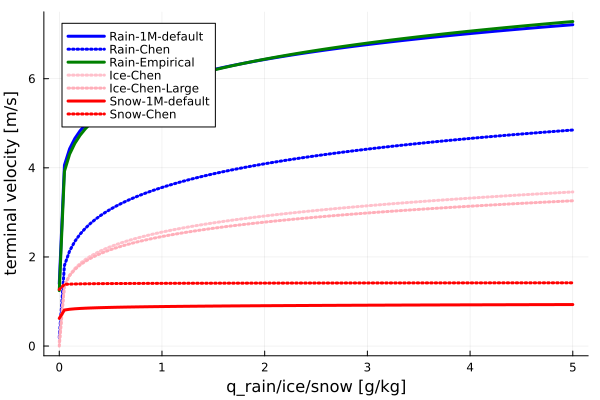 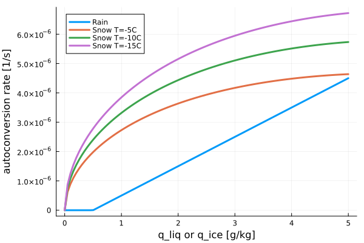 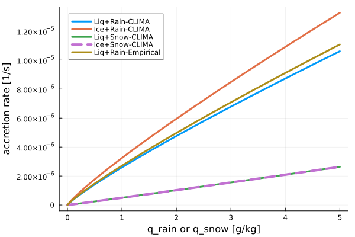 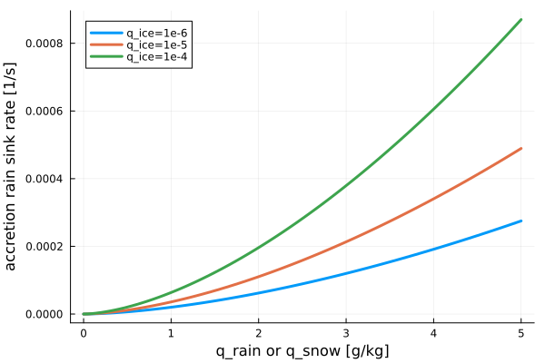 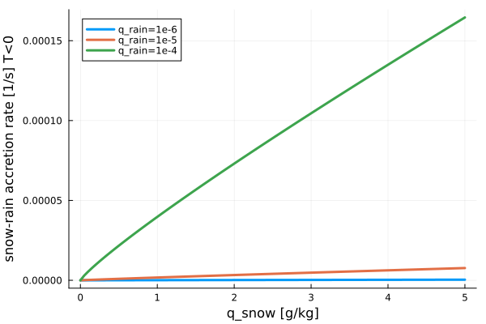 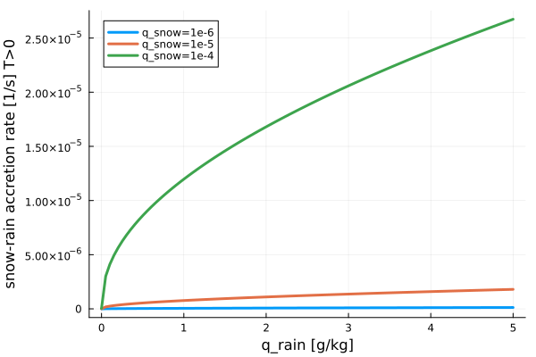 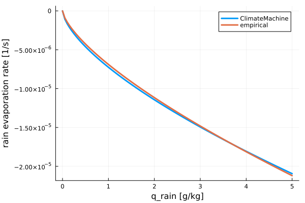 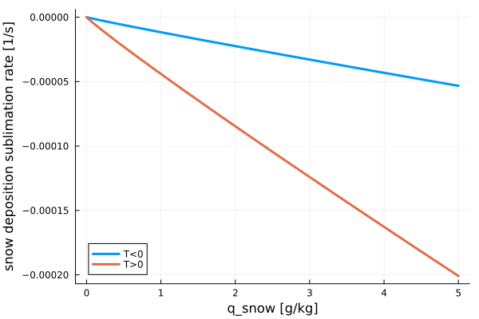 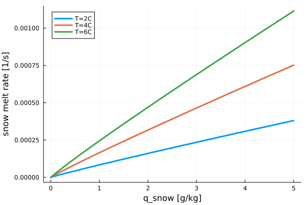